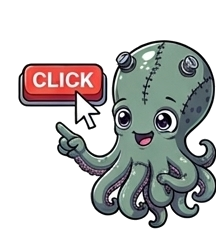
1')" alt="Osko the Octopus">skred
Adding audio to your BEAM apps doesn't have to be hard.
(Click before presentation)
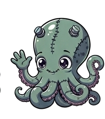
2')" alt="Osko the Octopus">Who Am I?
- Joe Stewart (aka octetta)
- Principal Firmware Engineer.
- Audio Programmer & BEAM Enthusiast.
- Creator of skred.
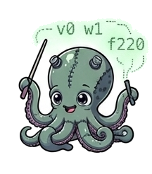
3')" alt="Osko the Octopus">1. What
Everything you've heard is generated in real-time.
The engine is small and self-contained.
It is driven entirely by tiny strings of text.
skred generates waveforms in interesting ways.
It can easily sequence patterns of those waves.
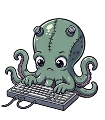
4')" alt="Osko the Octopus">2. The Problem
Audio programming is usually challenging.
- Frontend: Complex WebAudio JS graphs.
- Backend: Thread-blocking, GC pauses, DSP math.
"Audio rendering is completely decoupled from the BEAM."
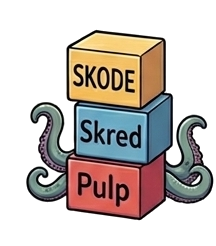
5')" alt="Osko the Octopus">3. The BEAM-like Solution
skred's design is inspired by the BEAM actor model.
- Message Passing: Send immutable strings (v0 f440 a-15 l1).
- Isolated State: The audio thread is lock-free and never parses text or allocates memory.
- Fault Tolerant: If your Elixir backend crashes, skred keeps playing. 😂
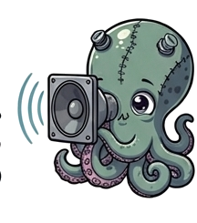
6')" alt="Osko the Octopus">4. Zero to Sound
WebAudio requires a mess of JS.
In skred, a sound effect is one string.
 Try It Now
Try It Now
Click a button above to see the skred string...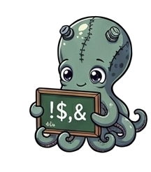
7')" alt="Osko the Octopus"> Reference
Reference
5. 30-seconds to skred
skred isn't random line noise; it follows intentional design idioms:
- Single letters prioritize what you touch constantly:
v0 n60 a-15 l1→ Voice 0, Note 60, Amplitude 0, Level (Trigger) 1 - Case implies context:
f(direct freq) vsF(freq modulation) - Punctuation implies intent:
?(inspect),/(subsystem control),>(routing)
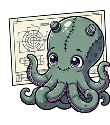
8')" alt="Osko the Octopus">6. Challenge
What will you build?
- Data Sonification: High server traffic increases the tempo. Errors trigger heavy FM synths in the dashboard.
- Multiplayer Games: Phoenix Channels broadcasting tiny skred strings to trigger WASM sound effects for all players.
- Type-Safe DSL: A Gleam library that generates skred safely.
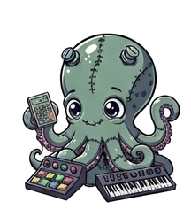
9')" alt="Osko the Octopus">7. Help
Share your sounds and music!
I need contributors to bring skred to the backend:
- A core GenServer to natively start, stop, and message the engine.
- Idiomatic wrappers for Erlang, Elixir, Gleam, & LFE.
- Package and publish to hex.pm.
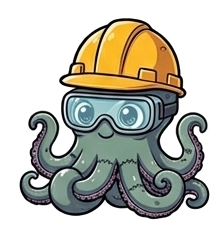
10')" alt="Osko the Octopus">8. Build With skred
"Let's make the world more noisy."

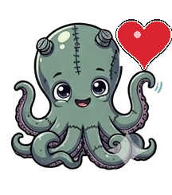
11')" alt="Osko the Octopus">Credits & Links
- Intro Music: Gadgetto (Bicycling Holding Dolly Oh-O-Ho)
- Engine Repo: github.com/octetta/pulp
- Command Reference: skode_reference.html
- Web Demo: octetta.github.io/skred-web
- Acknowledgements: Huge thanks to the BEAM community, Code BEAM organizers, and early testers!
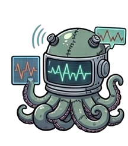
12')" alt="Osko the Octopus">...one more thing...
Connecting today with the past.